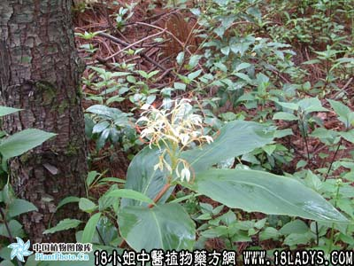

黑心姜(中药材植物名:毛姜王)(植物科目:蘘荷科)

别名：蓝姜、血母姜、土三七。
植物名：毛姜黄。
生长环境：本品为多年生草本，栽培。
分布：印度、越南、马来西亚和我国南部。
入药部分：根。
采集期：全年。
自采地点：家种。
性味：性温、味微辛、气香。
功能：祛风行气、散毒消肿、止痛、止血、消痞。
主治、用量和用法：1、产后风：生用4两、黑醋1斤，煎服，渣可食；2、产后瘀痛；3、跌打瘀患，均如上法。
验方1：（治产后及产后瘀痛方）黑心姜1两、独脚球1两、豆豉姜1两、清水四碗，煎成一碗服。
（方解）本方用黑心姜祛风散瘀止痛，独脚球行血活血、豆豉姜祛风。对产后瘀血不行而致腹中疼痛，及产后肝血虚损、肝风内煽，用之有效。
（方歌）产后瘀痛黑心姜，独脚球同豆豉姜，等分清水同煎服，祛风散瘀效无双。
验方2：（治跌打瘀患方）黑心姜1两、鸡骨香1两、金牛根5钱、金钮头5钱、五爪龙根5钱、清水四碗，煎成一碗服。
（方解）黑心姜、金钮头祛风散瘀；鸡骨香、金牛根祛风消肿止痛；五爪龙疏通血脉。因跌扑而内伤脏腑，外伤筋骨致成瘀患者，自收宏效。
（方歌）跌打瘀患不须愁，黑心姜与金钮头，五爪龙根鸡骨香，消肿止痛有金牛。